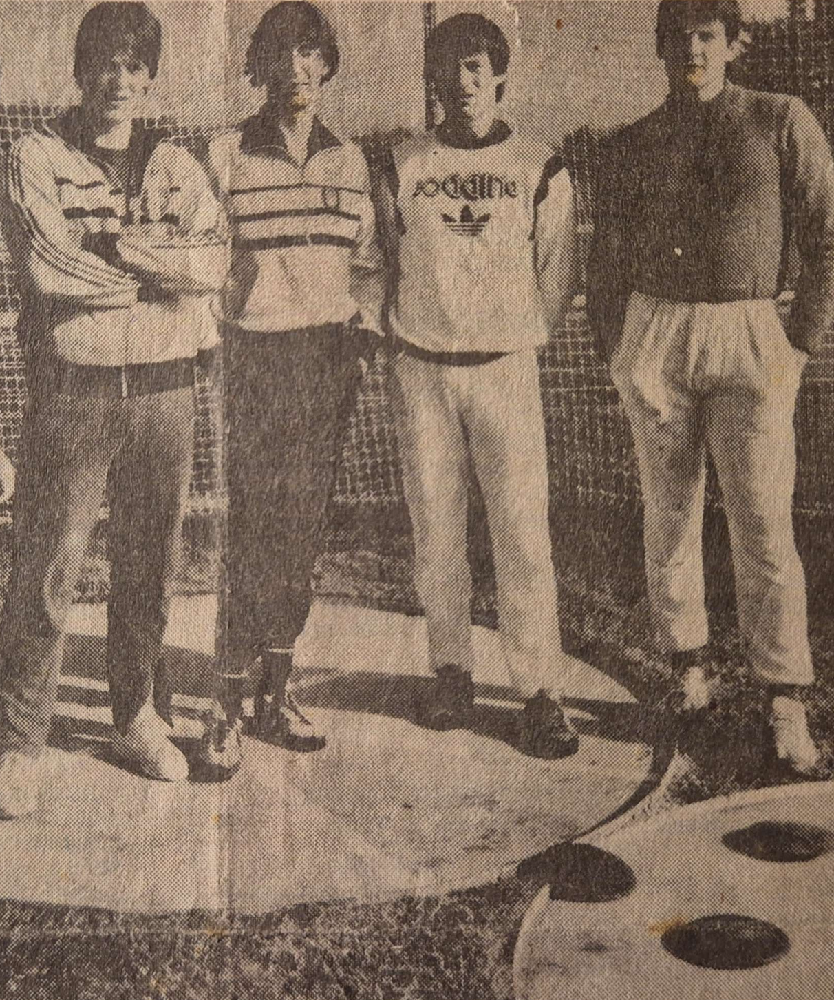
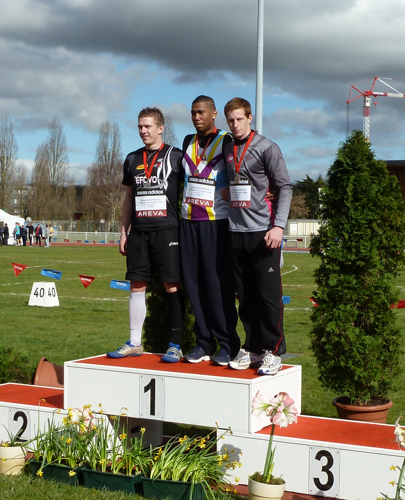
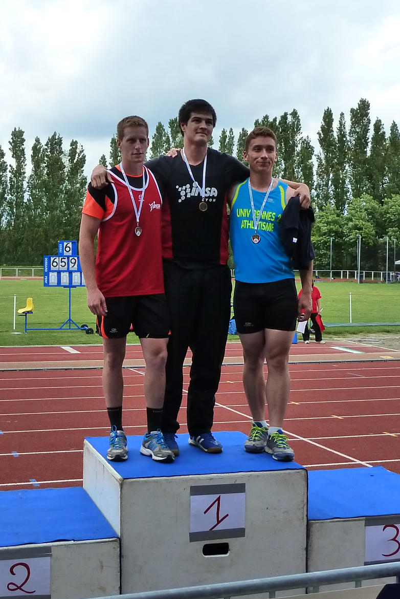
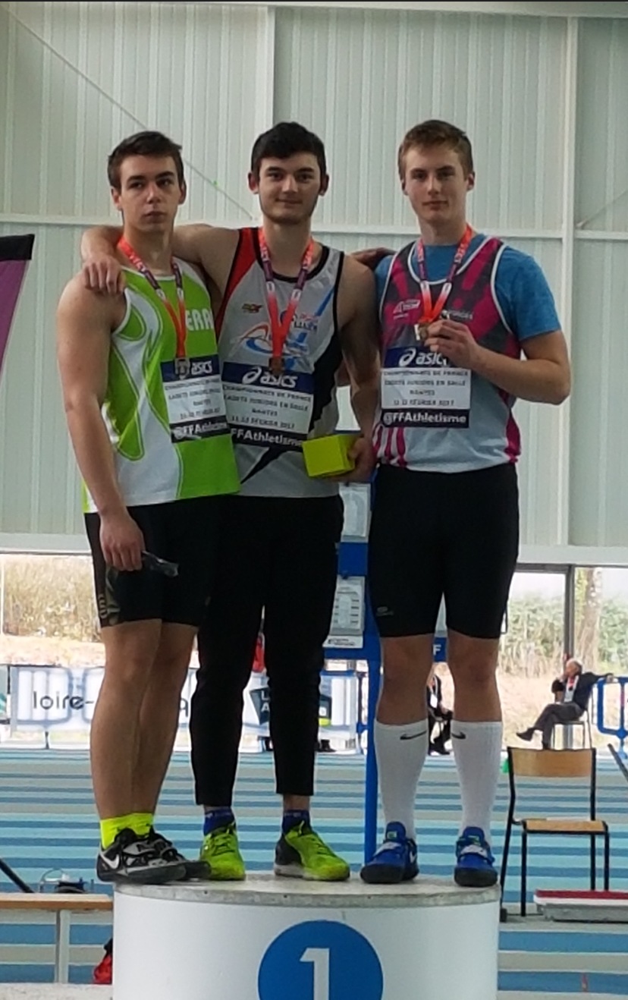
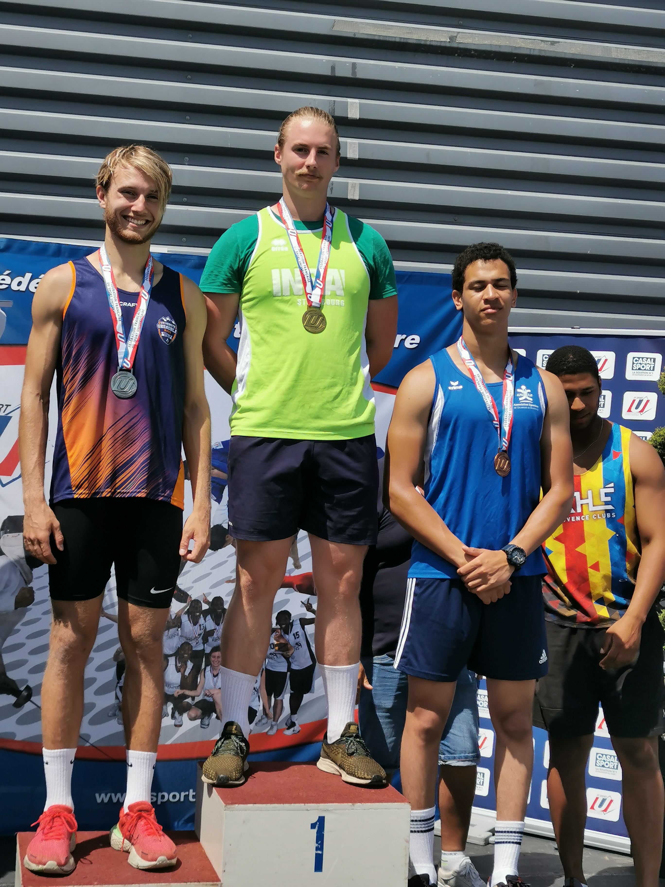
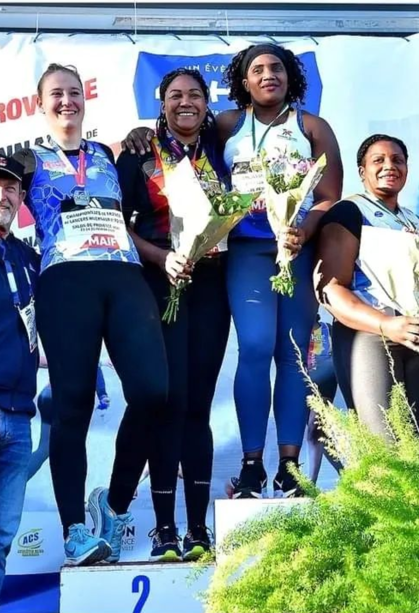
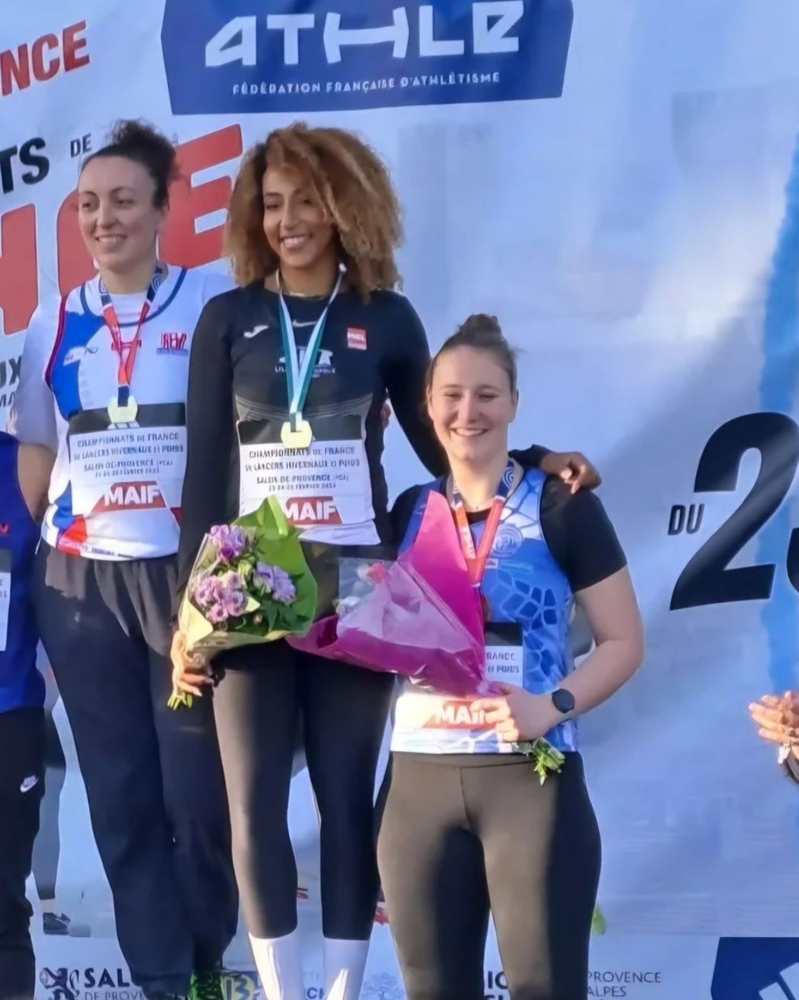
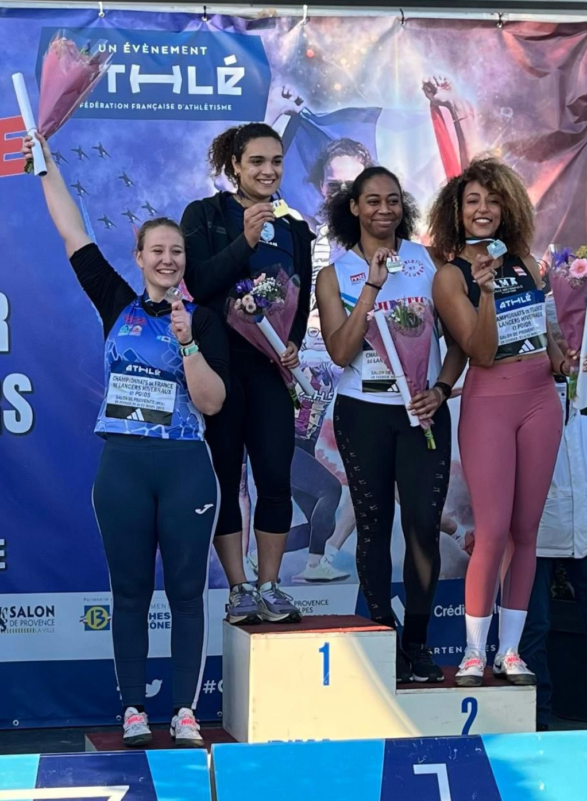

Médailles aux championnats de France
Historique des podiums nationaux du groupe
2
5
7
Daniel Balland — 3e des championnats de France
Daniel Balland — 3e des championnats de France

Daniel Balland — Champion de France
Franck Mathieu — Vice-champion de France

Maxime Balland — 3e des championnats de France
Maxime Balland — 3e des championnats de France
Maxime Balland — Vice-champion de France

Maxime Balland — Vice-champion de France

Charles Balland — 3e des championnats de France

Charles Balland — Vice-champion de France

Charles Balland — Champion de France

Fanny Thévenon-Lacôte — Vice-championne de France

Fanny Thévenon-Lacôte — 3e des championnats de France
